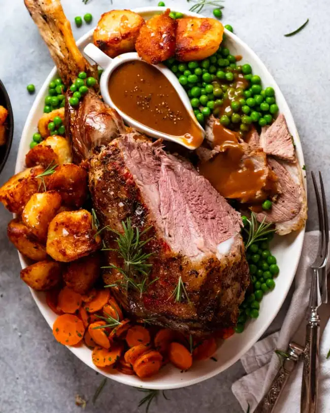
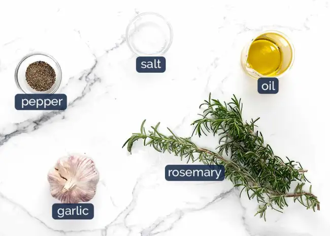

Roast Lamb
Home
Lasagna
Broccoli Pasta

Description
I have a lot to say about roasting any kind of meat. Especially Australia’s
favourite roast - the great lamb leg. But there’s really only one thing you
need to know to make perfect roast lamb leg, every single time:

Ingredients
- Roast Lamb
- Whatever else you see in the picture
Steps
- Make rub - Mix oil, garlic and rosemary in a bowl.
-
Rub then sprinkle - Slather the rub all over the lamb, then sprinkle
the salt and pepper all over. It’s better to do it this way for more even
dispersion of salt - if you put it in the oil, it doesn’t spread quite as
evenly because it pools in the bottom of the bowl.
- Garlic bed - Place cut garlic and rosemary under the lamb.
-
Hot oven 20 minutes - Roast for 20 minutes in a hot 240°C/475°F
(220°C fan) oven. This will get the colour going on the lamb. It’s tempting
to go longer to get even more colour on it but I find if you go beyond 20
minutes you end up with too much overcooked meat “ring” on the outer edges
of the lamb.
-
1 hour lower oven - Reduce heat to 200°C / 400°F (180°C fan) and
roast for a further 1 hour or until the internal temperature of the lamb is
53°C/127°F for blushing pink perfection.
Check the internal temperature at the 45 minute mark. Never rely on a recipe cook time for roast meat, use your thermometer! So
many variables can affect the exact roasting time, from oven strength to pan
heat distribution, the shape of the lamb leg and how cold the meat is right
in the middle.
-
Rest 20 minutes - Rest the lamb for 20 minutes before carving. During
this resting stage, the lamb finishes cooking and the internal temperature
will rise to 62°C/144°F which is perfect medium rare for lamb.